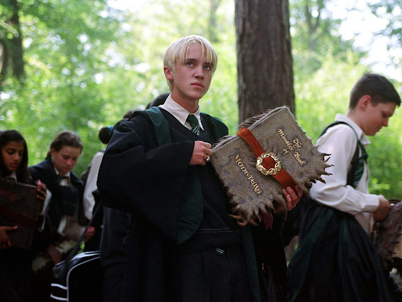
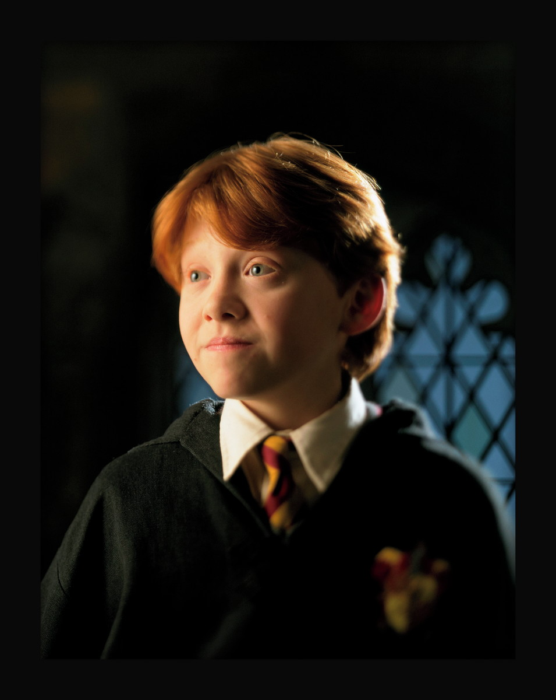

Os personagens favoritos:
Draco Malfoy
(o menino que não teve escolha): Draco é um personagem amargurado e “do mal” pois suas família vem de uma linhagem de bruxos totalmente puro sangue, com a maior parte mal e muito rica tbm onde não aceitam perder e muito menos sujar o sangue da família. Desde o primeiro filme ele tem como objetivo derrotar ou ser melhor do que Harry e Potter e seu trio, nisso ele sempre tenta dedurar eles, zombar e nunca deixar eles em paz, porém com o passar dos anos percebemos que ele não faz isso por escolha e sim pq seu pai o obriga, faz ele entrar no grupo do Voldemort que é o vilão da saga e fazer muitas coisas sem escolha alguma, ele sofre mto pois como não é algo que ele escolheu fazer então ele vive com essa culpa e sem amigos. No final dos filmes sabemos que ele arrepende então tenta se desculpar com todos os colegas, vemos que ele era bom porém nunca teve escolha essa é a visão dos fãs.
Hermione Granger:

Hermione é uma personagem que primeiramente é vista como uma sabichona porém acompanhando seu desenvolvimento vemos que ela é a primeira bruxa da família considerada então uma “sangue ruim”, ela sofre muito com isso porém vemos que ela aproveitou cada momento desde que recebeu a carta pra hogwarts para estudar tudo oq poderia sobre o mundo dos bruxos. Desde o primeiro ano vemos que ela se destaca por sua determinação e inteligência. Seu papel é voltado a sempre ser a cabeça do trio, ela é a personagem mais racional da saga, sempre usa sua sabedoria para tirar eles da encrenca, e é considerada a bruxa mais inteligente da sua idade. Ela é fantástica, impressiona todos ao seu redor, gosto dela pois é uma personagem feminina que carrega o Harry o Rony nas costas, sem ela eles não seriam nada, e tbm pq ela é muito inteligente, isso mostra que a determinação e o estudo podem nos levar a lugares inimagináveis.
Harry Potter
(o menino que sobreviveu):Harry Potter é o personagem principal a saga carrega o nome dele. Então tudo gira ao seu entorno, todos os acontecimentos e tudo mais. Harry é um personagem que sofre desde que se inicia tudo, perde seus pais para Voldemort ainda bebê, cresce em uma família de trouxas que o maltrata e mente pra ele sobre seus pais e sobre o mundo bruxo, porém quando chega aos seus 11 anos tudo muda, ele começa a receber muitas cartas de hogwarts e tem o conhecimento do mundo bruxo, porém nunca nada é fácil pra ele, seus tios tentam se mudar para o meio do nada do mar para nenhum bruxo conseguir ter contato com ele, porém não é isso que acontece, hagrid um meio gigante o encontra e o leva para o mundo dos bruxos onde o explico todos os acontecimentos e o ajuda a se instalar. Harry muito perdido fica sozinho no trem para hogwarts aí é onde ele conhece seu primeiro melhor amigo o Rony Weasley que é um de seus companheiros durante todas as aventuras vividas durante a saga, logo mais os dois conhecem a Hermione porém de primeira não vão muito com o jeito dela, mas não demora muito pros três virarem amigos inseparáveis e passarem a viver todos os problemas e soluções da saga juntos. Em todos os anos em que Harry estuda em hogwarts ele tem muitos problemas pois Voldemort não está morto como muitos pensam, ele volta para tentar matar o único bruxo que ele não conseguiu. Harry vive atormentado de problemas porém ele é seus amigos conseguem vencer todos eles, no fim de tudo Harry consegue viver bem no mundo dos bruxos.
Rony Weasley
Rony vem de uma familia bruxa muito pobre, vive em uma casa com mais quatro irmãos e com seus pais porém sua família toda contém nove integrantes, ele é o personagem que tem o seu maior desenvolvimento durante a saga ele começa sendo muito medroso e “burro”, porém ele vai tendo uma visibilidade muito grande com o passar dos anos, ele vence todos os seus medos e alcança objetivos que nunca imaginou que conseguiria, ele é o melhor amigo de Harry Potter isso faz com que ele tenha uma grande relevância em hogwarts pois sempre está junto dos problemas que surge, ele é um personagem que sofre muito por ser pobre porém nunca se deixa levar pelos comentários maldosos que escuta.